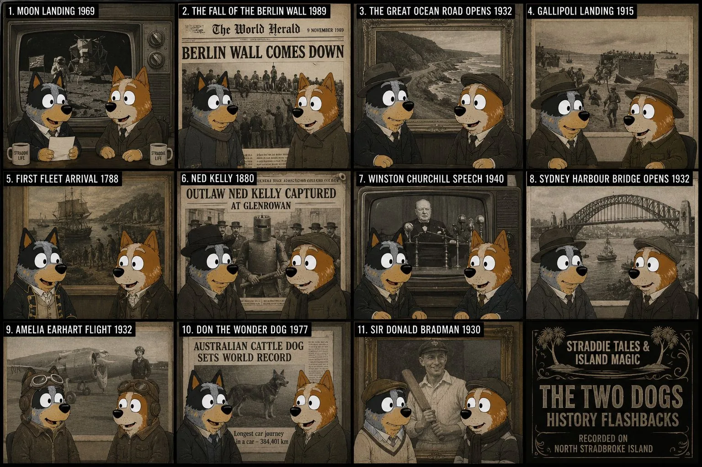

Lassie / Pal
Screen shorthand for loyalty, rescue, homecoming and noticing trouble before the humans are ready to name it.
Use when: trust, care, return, rescue, early warning.
 Two Dogs Podcast
Famous dogs
Two Dogs Podcast
Famous dogs
Dog cue bank
These references can pull a serious topic back into the Two Dogs world without forcing a punchline. A dog can be a tiny bridge, a warm callback, a source-check pause, or a reminder that human civilisation looks very strange from floor height.

These are cue cards, not finished lines. Exact dates, breeds, actor names and rights-sensitive claims are worth checking before recording.
Last source search: 23 May 2026, Australia/Brisbane.All found cue cards
Loyalty, warning and public memory
Screen shorthand for loyalty, rescue, homecoming and noticing trouble before the humans are ready to name it.
Use when: trust, care, return, rescue, early warning.
Akita loyalty over time, public memory, grief and the way a city can turn devotion into a landmark.
Use when: patience, loyalty, memory, public symbols.
A beloved civic dog story; useful when the point is local memory, even if the details need careful checking.
Use when: local legend, place memory, disputed-but-loved stories.
A travelling Australian dog story that can bridge place, mateship, folklore and the way communities remember their own characters.
Use when: place identity, road stories, belonging everywhere.
The corgis can carry public affection, daily routine, private life and the humanising detail around institutions.
Use when: public office, routine, affection, private detail.
Franklin D. Roosevelt's Scottish Terrier; useful for companionship, public image, wartime memory and personal loyalty.
Use when: leadership, public speech, loyalty, human scale.
Working through danger
The hard-route sled dog reference: difficult middle work, bad weather and effort that is not always the most famous part.
Use when: endurance, quiet credit, difficult routes.
The public-facing rescue-memory reference: delivery, recognition and the question of who gets remembered.
Use when: public recognition, rescue, final delivery.
Labrador Retriever guide dog reference for trust, calm under pressure and moving together through danger.
Use when: trust, guidance, danger, calm action.
Golden Retriever search-and-rescue dog reference for service, ageing heroes and respectful remembrance.
Use when: disaster response, service, respectful memory.
Labrador Retriever rescue dog reference for trained help, practical courage and disaster response when systems are strained.
Use when: emergency response, trained teams, practical courage.
Space dog reference for scientific ambition, progress, sacrifice and the duty to talk honestly about ethical cost.
Use when: space, science, progress, responsibility.
World War II service-dog reference for courage, military memory and dogs working inside human systems.
Use when: service, risk, old records, duty.
Weimaraner museum pest-detection dog reference for unusual useful jobs, art protection and quiet expertise.
Use when: unseen work, art, specialist detection, useful odd jobs.
Screen and animated memory
Cairn Terrier actor and character reference for noticing that the world is not behaving normally.
Use when: little clue, hidden truth, curtain about to move.
German Shepherd screen-star reference with rescued-dog memory and early film/radio fame.
Use when: media history, rescue, fame, old Hollywood.
Mixed-breed screen dog reference for ordinary-looking dogs with extraordinary awareness.
Use when: outsider smarts, everyday hero, street sense.
Saint Bernard screen character for an idea too large to ignore, rearranging the room by being there.
Use when: oversized problem, lovable chaos, household change.
Dogue de Bordeaux / French Mastiff screen reference for scent, mess, chaos, evidence and loyalty.
Use when: evidence trail, mess, smell test, loyal chaos.
Labrador Retriever reference for loveable disruption, family stress and affection that does not behave neatly.
Use when: domestic reality, lovable chaos, patience.
Golden Retriever screen-sport reference for talent, play and the cheerful absurdity of a dog joining the game.
Use when: sport, rules, surprise talent, fair play.
Cocker Spaniel screen reference for comfort, manners, family order and learning what home means.
Use when: home, class, care, manners.
Mixed-breed screen reference for freedom, street sense, class crossing and shared meals.
Use when: outsider knowledge, shared table, social class.
Dalmatian screen reference for rescue, family logistics and too many moving parts.
Use when: coordination, family, large-scale rescue.
Dalmatian screen reference for care, calm, family and rescue when the household becomes a mission.
Use when: care work, family pressure, practical calm.
Beagle as writer, pilot and daydream engine; a bridge from facts into imagination without losing the thread.
Use when: creative leap, writing, playful seriousness.
Great Dane shorthand for fear, appetite and friendship, while the mystery still gets solved.
Use when: source checking, weird claims, unmasking hype.
Disney pet-dog reference for physical comedy, simple emotional read and loyal companion energy.
Use when: visual reaction, pet logic, simple emotion.
Dog-adjacent performer reference for the moment the dog becomes the host, not just the pet.
Use when: performance, hosting, absurd dignity.
Big red dog reference for the giant version of a simple feeling: kindness, scale and visible consequence.
Use when: big simple truth, scale, gentleness.
Animated super-dog reference for performance, belief, media worlds and finding the real world again.
Use when: avatars, fame, illusion, real-world return.
Australian Blue Heeler reference for play, family intelligence, emotional clarity and tiny lessons that land.
Use when: play makes the point better than lecture.
Modern media and public life
Shiba Inu meme reference for internet culture, markets, collective attention and strange cultural afterlives.
Use when: meme culture, crypto echoes, internet mythology.
Pomeranian internet-record reference for small things with huge reach, performance and social media scale.
Use when: tiny but viral, metrics, performance.
Modern celebrity-dog reference for influencer culture, audience attention and brand-friendly dog fame.
Use when: social media, fame, attention economy.
Pomeranian reference for early cute-dog internet fame, soft nostalgia and the old shape of viral affection.
Use when: nostalgia, cute internet, early social media.
Portuguese Water Dog reference for family image, White House pet culture and public warmth around power.
Use when: family, office, image, public warmth.
Portuguese Water Dog reference for the second-dog energy: companionship, public life and family routine.
Use when: companion detail, family routine, public office.
Australian cattle dog reference from the current visual board. Source-check exact record details before recording.
Use when: Australian dog history, records, source-check pause.
Not one famous dog, but useful background when the show needs working-dog rhythm rather than celebrity-dog memory.
Use when: work, focus, practical intelligence, Red Dog energy.
Segment shape
One sentence names the reference and why it belongs in this moment.
Connect the dog reference to the human topic in plain language.
Hand back to the main story, guest, source check, scene cut or next beat.
Source starting points
Official character reference for the modern Australian heeler frame.
Official Peanuts page for Snoopy as beagle, writer and imagination engine.
Disney D23 character entry for Pluto as the classic pet-dog reference.
Disney D23 character entry for Goofy as performer and host-energy reference.
Disney D23 film entry for the shared-meal and class-crossing screen reference.
Disney D23 film entry for Pongo, Perdita and many-moving-parts family rescue.
Disney D23 film entry for the super-dog and media-reality reference.
Scholastic page for the big red dog scale-and-kindness reference.
National Park Service page for Togo and the serum-run reference.
AKC story page for the 9/11 guide-dog reference.
AKC page for the 9/11 search-and-rescue reference.
AKC article for the Mexican rescue-dog reference; check official Mexican Navy sources before exact claims.
Museum of Fine Arts page for the museum pest-detection dog reference.
NASA history article for the first animal in orbit reference.
Western Australia tourism page for the Dampier Red Dog statue.
Japan National Tourism Organisation page for the Hachiko statue and story.
FDR Library page for Roosevelt's dog and public memory.
Archived White House page for Bo as a White House family-dog reference.
Britannica entry for the early screen-star reference.
Dogecoin Foundation obituary for the Doge meme's Shiba Inu.
Guinness World Records article for the two-paw speed record.
Universal Pictures Home Entertainment page for the film reference.
WB Kids page for the character-world reference.